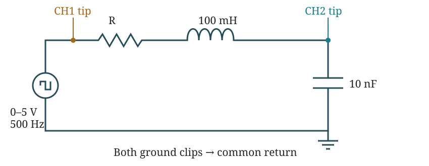

ECET 250E · LAB 07 · NOVEMBER 2, 2026
Second Order RLC Circuits
Set up once. Change the resistor. Save three scope screenshots.
Objective
See how resistance changes the capacitor voltage in a series RLC circuit. Compare critical, overdamped, and underdamped responses.
Preparation — completed
Use a 100 mH inductor. The source is 500 Hz, so the target natural frequency is 5 kHz.
Choose the standard 10 nF capacitor. Recalculate using that value:
| Case | Resistor to start with | Expected shape |
|---|---|---|
| A · Critical | Adjust near 6.32 kΩ | Fast rise, no overshoot |
| B · Overdamped | 10 kΩ > 6.32 kΩ | Slower rise, no overshoot |
| C · Underdamped | 1 kΩ < 6.32 kΩ | Overshoot and fading rings |
Use an adjustable resistor or a resistor combination for A. A 6.2 kΩ resistor is a starting point, not exactly critical. Adjust until the overshoot just disappears.
Allow for coil and generator resistance
The handout uses R in the ideal series circuit. The real total is R + Rcoil + Rgenerator. With a 50 Ω generator estimate:
If the same coil still measures 72.1 Ω, the nominal external setting is 6202.5 Ω. Recheck the coil and use today’s L and C; the earlier value is not entered as a new measurement.
Predicted values using the ideal components
These are predictions, not lab readings. All values below update from the measurements you enter.
At the bench
- Measure the parts with power off. Record L, C, and the resistance used for each case. If possible, also measure the coil’s winding resistance.
- Connect generator → R → L → C → generator ground. Keep the capacitor next to ground. CH1 tip goes to the generator output. CH2 tip goes between L and C. Both probe ground clips go to the bottom of C.
- Set the generator: square wave, 500 Hz, 5 Vpp, +2.5 V offset, 50% duty, High Z. Confirm the output switches between 0 and 5 V.
- Set the scope: both probes and channels to 10:1, DC coupling. Trigger on the CH1 rising edge. Start near 1 V/div and 100 μs/div; adjust to see the full response. Keep the same settings when practical.
- A — critical: start near the calculated critical setting. Adjust until the ringing just disappears. Save both channels as A2, labelled with the measured resistor value.
- B — overdamped: use 10 kΩ. The rise should be slower with no ringing. Save both channels as B2, labelled with R.
- C — underdamped: use 1 kΩ. Look for overshoot and fading rings. Save both channels as C2, labelled with R.
- Before leaving: take clear photos showing all circuit connections. Keep A2, B2, C2 and the wiring photos with your readings backup.
Turn the output off before changing components. Keep both scope ground clips at the generator ground.
Show the probe connections

Measurements
Enter the component values you use. Measure them where possible. If you use a marked L or C value, note that with your lab photos. Blank fields stay blank.
Calculations from your readings
Comparison including coil and generator resistance
Uses the measured winding resistance plus an estimated 50 Ω generator resistance. The handout calculations above use the external resistor alone.
Discussion and conclusion — finish after the lab
Use your screenshots and results to answer these three questions:
- Were the objectives met? Compare A, B, and C. State whether each screenshot matches the predicted response and use your calculated damping ratios.
- What else did you learn? Explain what happened when you increased or decreased R.
- What problems did you have, and how did you fix them? Describe what actually happened at your bench.
The report needs your observations and photos before it is ready to submit.
Report attachments
- A2 — CH1 and CH2 together, labelled with the critical resistor used.
- B2 — both channels, labelled with the overdamped resistor used.
- C2 — both channels, labelled with the underdamped resistor used.
- Photos showing all wiring connections.
No extra waveform cursor readings are requested in this handout.